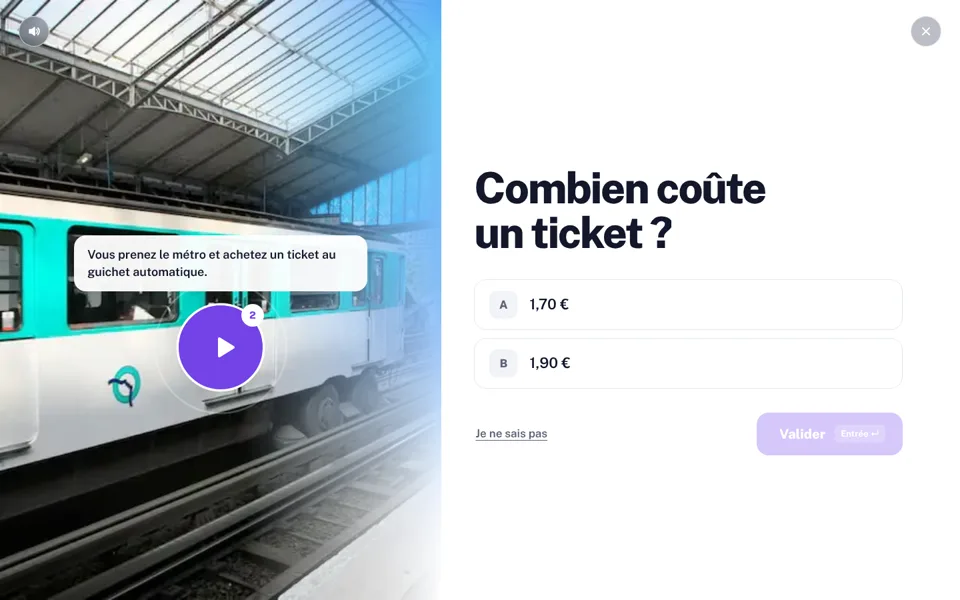
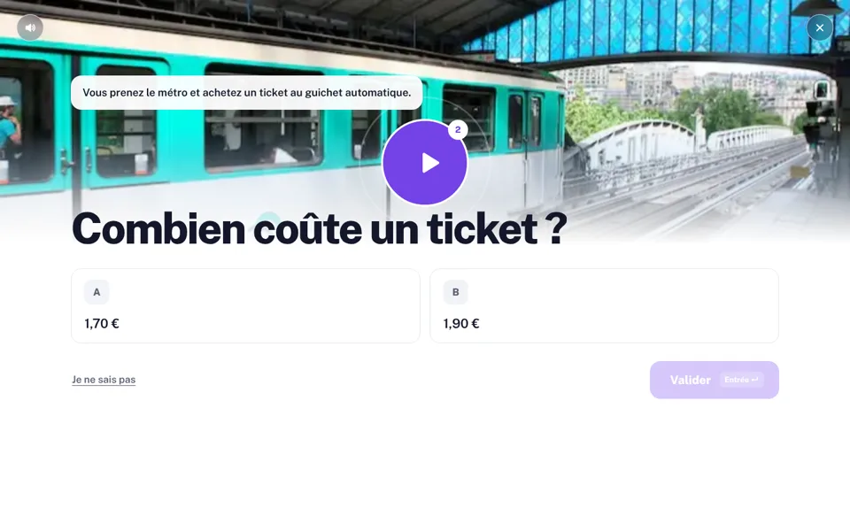
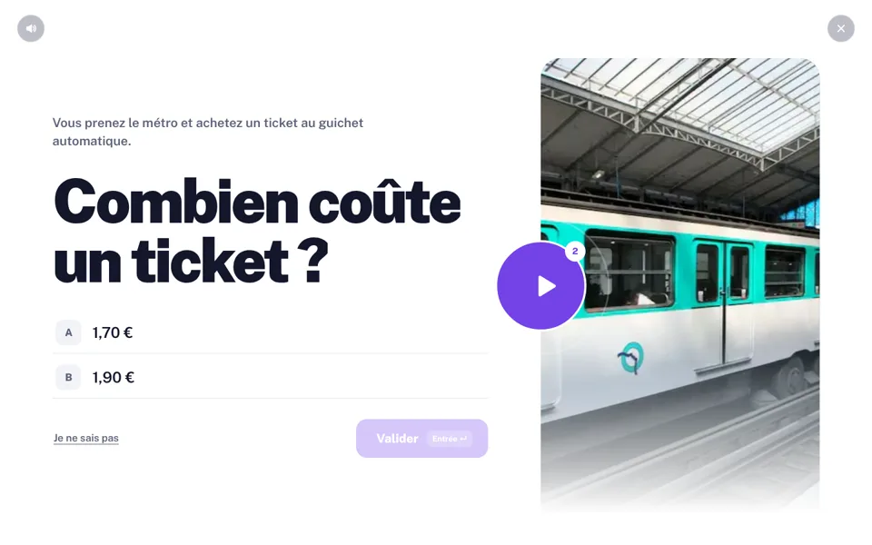
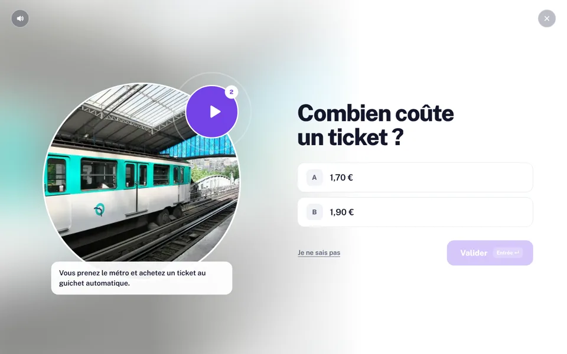
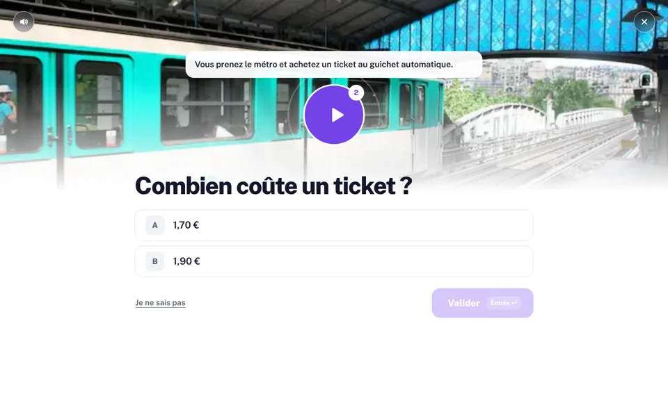
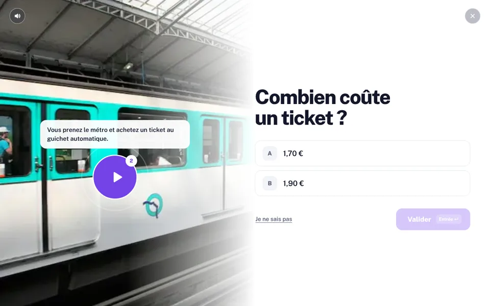

<title>Maquettes bureau</title>
<meta name="viewport" content="width=device-width, initial-scale=1, viewport-fit=cover">
<meta name="claude:viewport-fit-sides" content="cover">
<link rel="stylesheet" href="https://fonts.googleapis.com/css2?family=Public+Sans:wght@500;600;700;800;900&display=swap">
<style>
/* une galerie sobre : trois cartes, l'aperçu de chaque piste, sa transition */
:root { --ciel: linear-gradient(180deg, #58aef7 0%, #6fc0f8 26%, #88bffa 48%, #c6defb 69%, #f4f8fe 86%, #ffffff 100%); --violet: #7442e8; --encre: #14172b; --doux: #5d6278; --filet: #e3e5ee; --fond: #ffffff; color-scheme: light; }
* { box-sizing: border-box; }
body { margin: 0; background: var(--fond); color: var(--encre); font: 500 16px/1.55 "Public Sans", "Segoe UI", system-ui, sans-serif; }
.tete { background: var(--ciel); padding-block: 72px 56px; padding-left: max(16px, env(safe-area-inset-left, 0px)); padding-right: max(16px, env(safe-area-inset-right, 0px)); }
.tete > div, main { width: min(1180px, 100%); margin-inline: auto; }
main { padding-block: 8px 72px; padding-left: max(16px, env(safe-area-inset-left, 0px)); padding-right: max(16px, env(safe-area-inset-right, 0px)); }
h1 { margin: 0 0 14px; font-size: clamp(40px, 6vw, 76px); font-weight: 900; line-height: .98; letter-spacing: -.045em; text-wrap: balance; }
.tete p { max-width: 66ch; margin: 0; font-size: 18px; color: #1d2340; }
.grille { display: grid; grid-template-columns: repeat(3, minmax(0, 1fr)); gap: 24px; margin-top: -24px; }
.carte-piste { display: flex; flex-direction: column; overflow: hidden; border: 1.5px solid var(--filet); border-radius: 22px; background: #fff; color: inherit; text-decoration: none; transition: border-color .2s, transform .3s cubic-bezier(.2, .8, .2, 1); }
.carte-piste:hover { border-color: #c9b8fa; transform: translateY(-4px); }
.carte-piste:focus-visible { outline: 3px solid var(--violet); outline-offset: 3px; }
.apercu { display: block; aspect-ratio: 16 / 10; overflow: hidden; background: #eef3fd; }
.apercu img { display: block; width: 100%; height: 100%; object-fit: cover; }
.corps { display: grid; gap: 8px; padding: 20px 22px 22px; }
.lettre-piste { color: var(--violet); font-size: 13px; font-weight: 800; letter-spacing: .08em; text-transform: uppercase; }
.corps strong { font-size: 26px; font-weight: 800; letter-spacing: -.02em; }
.transition { color: var(--doux); font-size: 14.5px; }
.transition b { color: var(--encre); }
.ouvrir { margin-top: 6px; color: var(--violet); font-weight: 800; }
.note { margin-top: 32px; color: var(--doux); font-size: 15px; }
.note kbd { padding: 2px 7px; border: 1px solid var(--filet); border-radius: 6px; background: #f6f7fa; font-family: inherit; font-size: 13px; font-weight: 700; line-height: 1.4; }
@media (max-width: 960px) { .grille { grid-template-columns: 1fr; } }
@media (prefers-reduced-motion: reduce) { .carte-piste { transition: none; } }
</style>
<header class="tete"><div>
  <h1>Version bureau du test « L'examen »</h1>
  <p>Six façons de porter le test sur un écran d'ordinateur, avec les règles de la version mobile : le ciel, la photo qui se fond dans le blanc, la bille violette, le texte aligné à gauche, aucun niveau affiché. Chaque piste se joue : accueil, quatre questions réelles, fin.</p>
</div></header>
<main>
  <div class="grille">
    <a class="carte-piste" href="piste-a.html">
      <span class="apercu"></span>
      <span class="corps"><span class="lettre-piste">Piste A</span><strong>Le grand ciel</strong><span>La scène à gauche, la question en très grand à droite.</span><span class="transition"><b>Transition</b> · La photo suivante se pose par-dessus en reculant, le texte sort par le haut et la nouvelle question monte mot à mot.</span><span class="ouvrir">Ouvrir la piste →</span></span>
    </a>
    <a class="carte-piste" href="piste-b.html">
      <span class="apercu"></span>
      <span class="corps"><span class="lettre-piste">Piste B</span><strong>L'horizon</strong><span>Le bandeau de l'écran mobile en cinémascope, les réponses côte à côte en grandes cartes.</span><span class="transition"><b>Transition</b> · Un travelling : la photo glisse vers la gauche, la suivante arrive de la droite, le texte arrive net après un léger flou.</span><span class="ouvrir">Ouvrir la piste →</span></span>
    </a>
    <a class="carte-piste" href="piste-c.html">
      <span class="apercu"></span>
      <span class="corps"><span class="lettre-piste">Piste C</span><strong>L'affiche</strong><span>La question en typographie d'affiche, la photo dans une haute fenêtre de ciel qui suit la souris.</span><span class="transition"><b>Transition</b> · La fenêtre se referme vers le haut comme un store, la suivante s'ouvre par le bas, la question monte mot à mot.</span><span class="ouvrir">Ouvrir la piste →</span></span>
    </a>
    <a class="carte-piste" href="piste-d.html">
      <span class="apercu"></span>
      <span class="corps"><span class="lettre-piste">Piste D</span><strong>Le hublot</strong><span>La photo dans un grand cercle, la bille en satellite ; derrière, ses propres couleurs en flou léger, qui changent à chaque question.</span><span class="transition"><b>Transition</b> · Un diaphragme : le cercle se referme sur la bille, le suivant s'ouvre depuis elle et la photo recule.</span><span class="ouvrir">Ouvrir la piste →</span></span>
    </a>
    <a class="carte-piste" href="piste-e.html">
      <span class="apercu"></span>
      <span class="corps"><span class="lettre-piste">Piste E</span><strong>La scène</strong><span>L'écran mobile validé, agrandi et centré ; la photo s'étend sur toute la largeur derrière lui.</span><span class="transition"><b>Transition</b> · Une mise au point : la photo arrive floue et devient nette, la question monte mot à mot.</span><span class="ouvrir">Ouvrir la piste →</span></span>
    </a>
    <a class="carte-piste" href="piste-f.html">
      <span class="apercu"></span>
      <span class="corps"><span class="lettre-piste">Piste F</span><strong>Le plein cadre</strong><span>La piste A sans bord : le ciel et la photo prennent plus de la moitié de l'écran et se fondent dans le blanc.</span><span class="transition"><b>Transition</b> · La photo se déploie depuis la gauche, son bord fondu en tête, et la précédente se replie sous elle.</span><span class="ouvrir">Ouvrir la piste →</span></span>
    </a>
  </div>
  <p class="note">Au clavier : <kbd>A</kbd> <kbd>B</kbd> <kbd>C</kbd> (ou <kbd>1</kbd> <kbd>2</kbd> <kbd>3</kbd>) pour répondre, <kbd>Entrée</kbd> pour valider, <kbd>Échap</kbd> pour revenir à l'accueil. Sur l'accueil, les drapeaux changent la langue des consignes ; sur la question du métro, la bille fait entendre le vrai enregistrement. Ce sont des maquettes : la version mobile validée reste figée telle quelle.</p>
</main>